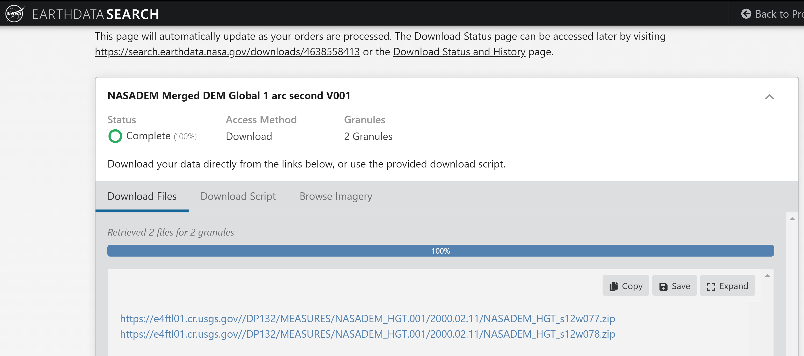

library(terra)
library(sf)
library(tmap)
library(tmaptools)
library(viridis)
# Generando objetos raster con terra
nasadem1 <- rast("data/s12w077.hgt")
nasadem2 <- rast("data/s12w078.hgt")
nasadem_mosaic <- terra::merge(nasadem1, nasadem2)
tm_shape(nasadem_mosaic)+
tm_raster(style="cont", palette=get_brewer_pal("Greys", plot=FALSE), title = "Elevación")+
tm_layout(legend.outside = F)Datos de Elevación con R
Introducción
En esta oportunidad vamos a presentar la metodología para manejar datos de un modelo de elevación digital (DSM), para nuestro caso hemos elegido emplear el NASADEM (NASA JPL 2020), los cuales serán descargados de plataformas oficiales y que una vez con los archivos en formato ráster disponibles, procederemos a usar paquetes de R como Terra para lograr manejar de manera eficiente este tipo de archivos. Nuestro objetivo será contar con un mapa de elevación que cubre el ámbito de una cuenca.
Descarga de datos NASADEM_HGT
Los productos de datos de NASADEM se derivaron de los datos de telemetría originales de la Misión Topográfica de Radar del Transbordador (SRTM), una colaboración entre la NASA y la Agencia Nacional de Inteligencia Geoespacial (NGA), así como la participación de las agencias espaciales alemana e italiana. El enfoque principal de SRTM fue generar un DEM casi global de la Tierra utilizando interferometría de radar.
Las capas de productos de datos NASADEM_HGT incluyen el DEM (formato HGT), número de escenas (NUM) y un conjunto de datos de cuerpos de agua SRTM actualizado (water mask). El tamaño del pixel es alrededor de los 30 metros, además la capa presenta unidades en metros y el tipo de datos son enteros de 16 bits. Mayores detalles técnicos sobre esta fuente de datos lo encuentran aquí.
Para acceder a los datos emplearemos el servicio de búsqueda del NASA Earthdata, el mismo que requiere estar registrado para contar con nuestro usuario y contraseña, en caso contrario no podremos acceder al servicio de descarga.
Como primera acción debemos diriginos sobre el mapa de fondo al sitio de donde necesitamos descargar nuestro DEM, luego seleccionar un filtro para seleccionar nuestro ámbito, en este caso usaremos un archivo ESRI Shapefile comprimido (*.zip) que tenemos de nuestro ámbito de estudio. En caso no se disponga podemos seleccionar un polígono o retángulo que cubra nuestra área de interés.
Note
Es posible que te salga avisos de advertencia porque el archivo brindado contiene mucho detalle de vértices, solicitándote que sea simplificado.
Luego que nos selecciona los archivos que encontró en función al área establecida podemos iniciar el proceso de descarga.
Durante el proceso de descarga tenemos la opción de conocer mayores detalles de nuestros archivos, en este caso vemos que nos indica el tamaño total de todos archivos seleccionados, luego solo hacemos clic en el botón “Download Data”.
Como parte final del proceso nos debería mostrar tantos enlaces de descarga como archivos previamente seleccionados. Como se aprecia en la figura, todos están en formato comprimido, conteniendo los archivos ya descritos anteriormente.

Ahora que tenemos nuestros archivos descargados en nuestro carpeta de trabajo, vamos a descomprimir solo aquellos que tienen la extensión *.hgt.
Generación de un mosaico ráster
Para nuestro caso en particular tenemos dos imágenes que cubren nuestro ámbito de estudio, por lo tanto, nuestro objetivo será unirlos para tener un mosaico. Usaremos la función merge() del paquete terra (Hijmans 2022). Para mostrar los mapas emplearemos el paquete tmap (Tennekes 2018) y para la generación de paleta de colores nos apoyamos con el paquete viridis .
Recorte del DEM
Para cumplir con nuestro objetivo vamos a incorporar nuestro ámbito de estudio y tomando sus límites para ser recortados.
Note
Al intentar graficar el vector que representa a la cuenca con el paquete tmap, verificamos que no es compatible con la clase de SpatVector, por lo tanto, empleamos la función st_read() del paquete sf (Pebesma 2018) para incorporar un vector en el mapa.
cuenca_chh <- vect("data/chancay_huaral.shp")
cuenca_chh2 <- st_read("data/chancay_huaral.shp")Reading layer `chancay_huaral' from data source
`D:\Repositorios\DSM_INIA\github\elevation_data\data\chancay_huaral.shp'
using driver `ESRI Shapefile'
Simple feature collection with 1 feature and 26 fields
Geometry type: POLYGON
Dimension: XY
Bounding box: xmin: -77.249 ymin: -11.66236 xmax: -76.45693 ymax: -11.01355
Geodetic CRS: WGS 84nasadem_chh <- mask(nasadem_mosaic, cuenca_chh)
tm_shape(nasadem_chh)+
tm_raster(alpha = .6, palette = "cividis", style = "cont", title = "Elevación (m)")+
tm_shape(cuenca_chh2)+
tm_borders(col="black")+
tm_layout(title = "Mapa de Elevación de la Cuenca Chancay-Huaral", title.position = c("right", "bottom"), legend.position = c("left", "top"))
Note
Para el mapa de elevación empleamos la paleta de colores denominada “cividis”, que es una versión corregida de “viridis”. Mayor información del mismo lo pueden revisar en este artículo (Nuñez, Anderton, and Renslow 2018).
Generación de capas sobre variables del terreno
A partir de nuestro mapa de elevación ya recortado para nuestro ámbito de estudio, vamos a generar otras capas que son derivadas del mismo, entre ellos la pendiente, la orientación y también índices de terreno como el índice de posición topográfica (TPI). Ahora nos vamos apoyar con el uso de la función terrain() del paquete terra.
# Determinación de la pendiente y la orientación
slope_chh <- terrain(nasadem_chh, v= "slope", neighbors=8, unit= "radians")
aspect_chh <- terrain(nasadem_chh, v= "aspect", neighbors=8, unit= "radians")
# Determinación de índices de terreno
tri_chh <- terrain(nasadem_chh, v= "TRI") # Índice de rugosidad del terreno
tpi_chh <- terrain(nasadem_chh, v= "TPI") # Índice de posición topográfica
roug_chh <- terrain(nasadem_chh, v= "roughness")
slp <- tm_shape(slope_chh)+
tm_raster(style = "cont")+
tm_layout(main.title = "Mapa de Pendiente")
asp <- tm_shape(aspect_chh)+
tm_raster(style = "cont")+
tm_layout(main.title = "Mapa de Orientación")
tri <- tm_shape(tri_chh)+
tm_raster(style = "cont")+
tm_layout(main.title = "Mapa de TRI")
tpi <- tm_shape(tpi_chh)+
tm_raster(style = "cont")+
tm_layout(main.title = "Mapa de TPI")
tmap_arrange(slp, asp, tri, tpi)Guardando nuestros resultados
Finalmente vamos a guardar nuestros resultados obtenidos de manera individual empleando la función de terra writeRaster(). Vamos a considerar que lo vamos a guardar en formato GeoTiff.
writeRaster(nasadem_chh, "data/dem_chancay.tif", overwrite= TRUE, filetype = "GTiff", gdal = "COMPRESS=NONE", datatype= 'INT2U')
writeRaster(slope_chh, "data/slope_chancay.tif", overwrite= TRUE, filetype = "GTiff")
writeRaster(aspect_chh, "data/aspect_chancay.tif", overwrite= TRUE, filetype = "GTiff")
writeRaster(tri_chh, "data/tri_chancay.tif", overwrite= TRUE, filetype = "GTiff")
writeRaster(tpi_chh, "data/tpi_chancay.tif", overwrite= TRUE, filetype = "GTiff")
writeRaster(roug_chh, "data/roung_chancay.tif", overwrite= TRUE, filetype = "GTiff")References
Hijmans, Robert J. 2022. “Terra: Spatial Data Analysis.” https://CRAN.R-project.org/package=terra.
NASA JPL. 2020. “NASADEM Merged DEM Global 1 Arc Second V001.” NASA EOSDIS Land Processes DAAC. https://doi.org/10.5067/MEASURES/NASADEM/NASADEM_HGT.001.
Nuñez, Jamie R., Christopher R. Anderton, and Ryan S. Renslow. 2018. “Optimizing Colormaps with Consideration for Color Vision Deficiency to Enable Accurate Interpretation of Scientific Data.” Edited by Jesús Malo. PLOS ONE 13 (7): e0199239. https://doi.org/10.1371/journal.pone.0199239.
Pebesma, Edzer. 2018. “Simple Features for r: Standardized Support for Spatial Vector Data” 10. https://doi.org/10.32614/RJ-2018-009.
Tennekes, Martijn. 2018. “Tmap: Thematic Maps in r” 84. https://doi.org/10.18637/jss.v084.i06.